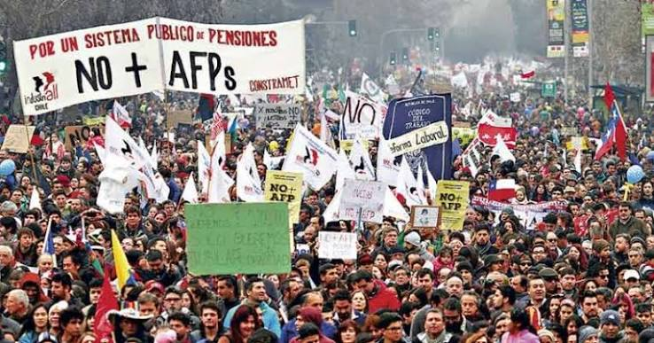

Apuesta contra la norma, con la plata de las AFP: Cómo 7.700 millones de dólares de los trabajadores chilenos terminaron en bancos de EEUU
En septiembre de 2026, las siete AFP que operan en Chile revelaron una pérdida de valoración de 7.700 millones de dólares acumulada en contratos financieros complejos vinculados a las tasas de interés de Estados Unidos. Un análisis del escándalo de los Swaps, el rol de BlackRock y el sistema de pensiones como mecanismo de financiarización global.

I. EL HECHO CONCRETO
En septiembre de 2026, las siete Administradoras de Fondos de Pensiones (AFP) que operan en Chile revelaron una cifra que ha sacudido al sistema previsional: una pérdida de valoración de 7.700 millones de dólares (7.7 billion en inglés) acumulada en contratos financieros complejos vinculados a las tasas de interés de Estados Unidos.
Para dimensionar la magnitud: estamos hablando de aproximadamente 7 billones de pesos chilenos (7.000.000.000.000 pesos), una suma equivalente a casi el 2,5% del Producto Interno Bruto anual de Chile (que ronda los 300.000 millones de dólares), extraída en forma de pérdida contable de los ahorros previsionales de más de 10 millones de trabajadores.
Contexto temporal: Una apuesta iniciada en 2024
Es fundamental precisar que esta estrategia especulativa se acumuló principalmente durante el año 2024 y principios de 2025, bajo el gobierno del presidente Gabriel Boric. Durante este periodo, la discusión sobre las AFP en Chile vivió hitos críticos de negociación política y de mercado. El debate se concentró en destrabar la Reforma Previsional en el Congreso tras años de estancamiento. Mientras los políticos discutían la ley en Valparaíso, las administradoras ejecutaban estrategias de inversión agresivas. Entre enero de 2024 y el inicio de 2025, las AFP realizaron un movimiento financiero masivo: apostaron en el extranjero a que las tasas de interés de Estados Unidos iban a bajar de forma acelerada.
Y un dato clave: Los contratos de derivados financieros (Swaps de tasas de interés) operados por las AFP pasaron de US$ 22.000 millones en enero de 2024 a más de US$ 100.000 millones a inicios de 2025. Un 355% más en un año.
¿Qué son los famosos "Swaps" y cómo funcionó la apuesta?
La pérdida no se debió a una caída tradicional de acciones, sino a una estrategia financiera sofisticada basada en instrumentos derivados, específicamente contratos llamados "Swaps" (permutas financieras).
Un ejemplo concreto para entender la mecánica:
Imaginemos que una AFP firma un contrato swap por 1.000 millones de dólares con un banco de Wall Street. El acuerdo es el siguiente:
- La AFP recibe: una tasa fija del 4% anual sobre esos 1.000 millones (es decir, 40 millones de dólares al año).
- La AFP paga una tasa variable que depende de lo que haga la Reserva Federal de EE.UU.
Escenario A (lo que las AFP esperaban): Si las tasas de la Fed bajaban al 3%, la AFP pagaba solo 30 millones pero recibía 40 millones. Ganancia neta: 10 millones de dólares.
Escenario B (lo que realmente ocurrió): Si las tasas de la Fed subían al 6%, la AFP tenía que pagar 60 millones pero solo recibía 40 millones. Pérdida neta: 20 millones de dólares.
Durante los últimos dos años, las siete AFP acumularon posiciones masivas en estos Swaps bajo la lógica del Escenario A. De hecho, hace apenas un año, esta estrategia le generaba al sistema una ganancia de valoración de unos 1.400 millones de dólares.
¿Entonces qué salió mal?
Factores macroeconómicos globales dieron vuelta la jugada:
- El aumento de la deuda pública de Estados Unidos: El déficit fiscal estadounidense se disparó, generando desconfianza en los bonos del Tesoro.
- Presiones inflacionarias persistentes: A pesar de que la inflación había bajado desde sus picos de 2022, se mantuvo por encima del objetivo del 2% de la Fed durante 2024 y 2025, alimentada por:
- El aumento de los precios de la energía debido a la guerra en Irán.
- La disrupción de cadenas de suministro globales.
- El aumento de los costos de vivienda y servicios en EE.UU.
Ante estas presiones inflacionarias que no cedían, la Fed decidió subir las tasas de interés nuevamente en septiembre de 2025 (la primera subida desde 2023), sorprendiendo a los mercados que esperaban recortes.
El resultado: Al subir las tasas variables por encima de la tasa fija que las AFP recibían, el valor de estos contratos se desplomó. En cuestión de meses, la posición pasó de ser una ganancia de 1.400 millones a una pérdida de valoración de 7.700 millones de dólares en septiembre de 2026.
La situación se volvió crítica cuando la Superintendencia de Pensiones de Chile, ante el creciente riesgo, impuso nuevos límites a la exposición en derivados. La nueva normativa exige a las AFP reducir sus posiciones en estos instrumentos a partir del 4 de noviembre de 2026, con un plazo máximo de 210 días para ajustarse. Aquí está la trágica ironía: esta regla obliga a las administradoras a cerrar (desarmar) estas posiciones en un momento en que su valoración es negativa. Por lo tanto, lo que era una "pérdida de papel" (una caída contable que podría haberse recuperado si se esperaba a que las tasas bajaran en el futuro) se está convirtiendo en una pérdida real y efectiva, ya que las AFP deben pagar la diferencia en efectivo a los bancos contrapartes al cerrar los contratos.
Sin embargo, hay que ser objetivos: si la Superintendencia no hubiera intervenido para obligar a cerrar estas posiciones, existía el riesgo real de que las tasas siguieran subiendo y la pérdida fuera aún mayor (potencialmente 15.000 o 20.000 millones de dólares). La regulación, aunque dolorosa, busca evitar una catástrofe mayor. Es un "mal menor" regulatorio.
Dicho esto, sí ha habido otras pérdidas históricas masivas en las AFP, pero la situación actual tiene matices que la hacen única y mucho más controversial. Aquí te detallo las mayores crisis previas, sus montos y sus causas:
1. La Crisis Financiera Global (2008-2009)
Monto estimado de la pérdida: Alrededor de 36.000 millones de dólares en pérdida de valorización acumulada en el punto más crítico de la crisis
Causa: El colapso del mercado inmobiliario de EE.UU. (crisis subprime) provocó una caída en cascada de las bolsas de valores mundiales. Como los fondos de pensiones chilenos tenían una alta exposición a acciones (Renta Variable), el valor de las carteras se desplomó.
A quiénes afectó: Principalmente a los Fondos A y B, que por ley estaban diseñados para ser los de mayor riesgo y mayor rentabilidad esperada a largo plazo.
Diferencia clave con hoy: Aunque la caída fue brutal, fue un fenómeno de mercado generalizado. Quienes no se cambiaron de fondo ni se retiraron, vieron cómo sus carteras se recuperaron y superaron los máximos anteriores en los años siguientes (2010-2013). No hubo una "cristalización" forzosa de la pérdida por regulación.
2. El Shock de la Pandemia (Marzo-Abril 2020)
Monto estimado de la pérdida: Una caída abrupta de entre el 8% y 12% en el valor de las cuotas en cuestión de semanas, lo que equivalió a US$ 25.000 millones de dolares.
Causa: El pánico global por el COVID-19 y el congelamiento repentino de la economía mundial.
A quiénes afectó: De nuevo, principalmente a los Fondos A y B.
Diferencia clave con hoy: La pérdida fue extremadamente rápida, pero también lo fue la recuperación. Los bancos centrales (especialmente la Reserva Federal de EE.UU.) inyectaron liquidez masiva, lo que provocó un rebote en "V" de los mercados. La pérdida nunca se "cristalizó" de forma permanente para quienes mantuvieron sus ahorros.
3. La Crisis de Inflación y Tasas (2022-2023)
Monto estimado de la pérdida: El Fondo E registró su primer año histórico con rentabilidad negativa (alrededor de -5% a -7% acumulado), lo que representó US$ 17.500 millones de dólares en pérdida para los afiliados más conservadores.
Causa: La guerra en Ucrania, la ruptura de las cadenas de suministro y la posterior decisión de la Reserva Federal de EE.UU. de subir las tasas de interés agresivamente para combatir la inflación. Esto hizo caer el precio de los bonos (Renta Fija), que son el componente principal del Fondo E.
Diferencia clave con hoy: Fue una pérdida por la revalorización natural de los bonos en un entorno de tasas altas, pero no involucraba apuestas apalancadas con derivados complejos.
El Fondo E: el refugio que se convirtió en trampa
Aunque todos los multifondos tienen exposición, el Fondo E ha sido el más golpeado. Este fondo está diseñado por ley para ser el más conservador y de menor riesgo, ideal para personas que están a pocos años de jubilar y no pueden permitirse sobresaltos.
Extrañamente, este fondo concentraba una gran parte de estas posiciones especulativas. Como resultado, el Fondo E acumula una caída de alrededor del 10,4% en lo que va del año 2026, con casi la mitad de esa pérdida ocurriendo solo en el mes de septiembre.
Acá, la crítica de fondo y que puede constituir dolo, es que invertir masivamente en Swaps especulativos no es un instrumento de inversión adecuado para los fondos D y E, que por su naturaleza conservadora deberían priorizar la seguridad sobre la rentabilidad.
II. LOS BENEFICIARIOS: WALL STREET Y EL ECOSISTEMA BLACKROCK
Las contrapartes directas: Bank of America y Citigroup
Los reportes financieros, citados por Bloomberg y medios especializados, identifican explícitamente a Bank of America y Citigroup, entre otros grandes bancos de Wall Street, como las contrapartes de estos contratos de Swaps. Al tener que cerrar estas posiciones con una valoración negativa, las AFP están obligadas a pagar la diferencia de dinero directamente a estas instituciones financieras para saldar los contratos. El dinero de los ahorros de trabajadores chilenos —profesores, cajeros, enfermeras, obreros— termina fluyendo hacia los balances de estos gigantes bancarios estadounidenses.
La pregunta sobre la diversificación: ¿Realmente es diversa?
Las AFP argumentan que deben invertir en el extranjero para "diversificar el riesgo" y no depender exclusivamente de la economía chilena. Sin embargo, la realidad es que una parte desproporcionada de estas inversiones se concentra en Estados Unidos. Cuando las AFP invierten en "renta fija internacional" o "derivados de tasas extranjeras", en la práctica están apostando a los bonos del Tesoro estadounidense y a los mercados financieros de Wall Street. Esto significa que toda la cartera de los trabajadores chilenos está expuesta a las decisiones de la Reserva Federal de EE.UU., lo que contradice el principio de diversificación geográfica real.
Una diversificación verdaderamente efectiva implicaría distribuir las inversiones de manera más equilibrada entre diferentes regiones (Europa, Asia, mercados emergentes), no concentrarlas en un solo país cuyo banco central puede cambiar las reglas del juego de un día para otro.
El papel sistémico de BlackRock
Aquí es donde entra uno de los actores más poderosos del sistema financiero global: BlackRock, el gestor de activos más grande del mundo, que administra cerca de 10 billones de dólares (en inglés, trillions).
Aunque BlackRock no es dueño directo de ninguna AFP en Chile (los dueños son grupos como Sura, Principal Financial Group, MetLife, BTG Pactual, etc.), su influencia en el sistema financiero chileno es masiva y estructural a través de cuatro canales principales:
- Las AFP invierten miles de millones en productos de BlackRock. Las AFP chilenas deben diversificar sus carteras en el extranjero. Para hacerlo, compran fondos mutuos y ETFs (fondos cotizados en bolsa). BlackRock, a través de su marca iShares, es uno de los mayores proveedores mundiales de estos instrumentos. Una parte significativa de los ahorros de los chilenos en el "componente extranjero" de las carteras está depositada en fondos administrados por BlackRock.
- BlackRock es accionista masivo en las empresas chilenas que usan la plata de las AFP. A través de sus fondos indexados, BlackRock es consistentemente uno de los 10 principales accionistas de las empresas más grandes de Chile que cotizan en bolsa: SQM, Falabella, Cencosud, Banco de Chile, Santander, Aguas Andinas, Enel, entre otras. Estas mismas empresas son las que reciben financiamiento de las AFP a través de la compra de bonos corporativos y acciones. Es decir, la plata de los trabajadores chilenos financia a estas empresas, y BlackRock es accionista de esas mismas empresas. Esto crea un conflicto de interés estructural: BlackRock se beneficia tanto de las comisiones que las AFP pagan por invertir en sus productos, como de la valorización de las empresas chilenas donde es accionista y que son financiadas con la plata de las AFP.
- La tecnología de riesgo: el sistema "Aladdin" y nuestras reservas internacionales. BlackRock posee Aladdin (Asset, Liability, Debt and Derivative Investment Network), el software de gestión de riesgos y análisis de carteras más poderoso del mundo. Este sistema monitorea más de 20 billones de dólares en activos a nivel global y es utilizado por los mayores bancos centrales, fondos soberanos y gestores de activos del planeta. El vínculo en Chile es profundo y preocupante: El Banco Central de Chile ha utilizado históricamente el sistema Aladdin para la gestión de riesgos de sus propias reservas internacionales. Estamos hablando de las reservas que respaldan la estabilidad monetaria del país, administradas con tecnología de una empresa privada extranjera que, al mismo tiempo, es accionista de los bancos contraparte de las AFP y de las matrices de las propias AFP. La pregunta obligada es: Si nuestras reservas internacionales —que son patrimonio de todos los chilenos— están siendo gestionadas con herramientas de BlackRock, ¿qué nivel de influencia real tiene esta corporación sobre las decisiones económicas del país? ¿Quién vigila al vigilante?
- La "puerta giratoria": ¿Solo Lobby o algo más? No existe un caso documentado públicamente de un ex ejecutivo de BlackRock llegando directamente a ser Superintendente de Pensiones en Chile. Sin embargo, la pregunta incómoda es: ¿Qué relaciones existen más allá de lo que registra la Ley de Lobby? Lo que sabemos: La élite financiera chilena (gerentes de inversiones, directores de bancos, ex autoridades del Ministerio de Hacienda y Banco Central) suele formarse en las mismas universidades de EE.UU. (Harvard, MIT, Stanford, Chicago) y compartir redes profesionales con ejecutivos de Wall Street. Muchos de los gerentes de inversiones de las AFP han trabajado previamente en bancos de inversión globales (J.P. Morgan, Goldman Sachs, Citigroup, Morgan Stanley), que son socios y contrapartes habituales de BlackRock. Ex autoridades chilenas (ministros de Hacienda, presidentes del Banco Central, superintendentes) han terminado trabajando en el sector privado financiero, incluyendo consultoras que asesoran a las AFP o a sus matrices extranjeras. Lo que debemos preguntarnos: ¿Ha habido funcionarios de la Superintendencia de Pensiones que, antes o después de su cargo, hayan trabajado en las AFP, en sus matrices extranjeras, o en bancos de Wall Street? ¿Existen reuniones privadas entre gerentes de inversiones de las 7 AFP donde se coordinen estrategias? ¿Hay actas, correos electrónicos, mensajes que lo documenten? ¿Los directorios de las AFP tienen miembros que simultáneamente sean directores de bancos contraparte o de empresas vinculadas a BlackRock? La transparencia es mínima: A diferencia de lo que ocurre en otros países, en Chile no existe un registro público detallado de la "puerta giratoria" entre el sector público financiero y el sector privado. Esto permite que conflictos de interés estructurales operen bajo el radar.
III. RESPONSABILIDADES: ¿QUIÉN APROBÓ ESTA JUGADA?
La estructura del CISCI: El "freno de mano" que no funcionó
No es una decisión de una sola persona, sino que sigue una estructura de gobierno corporativo obligatoria dentro de cada AFP. El órgano clave es el Comité de Inversiones y Solución de Conflictos de Interés (CISCI), que es un comité interno de cada AFP (no de la Superintendencia), aunque su existencia y funciones están reguladas por el ente fiscalizador.
Composición del CISCI:
- Nivel Directivo: Tres miembros del Directorio de la AFP, dos de los cuales deben ser Directores Autónomos (independientes).
- Nivel Gerencial: Participan el Gerente General, el Gerente de Inversiones y el Gerente de Riesgos de la AFP.
Los involucrados: Nombres y AFPs
A continuación, los principales ejecutivos que lideraron las decisiones de inversión en cada AFP durante el período en que se acumularon estas posiciones:
- AFP Capital (Controlada por Grupo Sura, Colombia)
Gerente General: Renzo Vercelli Baladrón
Gerente de Inversiones: Gonzalo Hurtado de Mendoza (estructura Sura)
Presidente del Directorio: Juan Carlos Chomalí Acuña - AFP Cuprum (Controlada por Principal Financial Group, EE.UU.)
Gerente General: Martín Mujica O.
Gerente de Inversiones: Andrés García
Presidente del Directorio: Pedro Atria - AFP Hábitat (Controlada por la Cámara Chilena de la Construcción)
Gerente General: Max Sichel (asumió en enero 2026, reemplazando a Alejandro Bezanilla)
Gerente de Inversiones: Piero Irivarren
Presidente del Directorio: Luis Rodríguez Villasuso - AFP Modelo (Controlada por BTG Pactual)
Gerente General: Andrés Flisfisch Camhi
Gerente de Inversiones: Andrés Balassa
Presidente del Directorio: Ricardo Edwards Vial - AFP PlanVital (Controlada por Generali, Italia)
Gerente General: José Joaquín Prat Errázuriz
Gerente de Inversiones: Diego Dziekonski Vásquez - AFP ProVida (Controlada por MetLife, EE.UU.)
Gerente General: Santiago Donoso Hüe
Gerente de Inversiones: Patricio Muñoz
Presidente del Directorio: Andrés Merino Cangas - AFP Uno (Controlada por grupo de inversionistas chilenos)
Gerente General: Teo Colombo Santorsola
Gerente de Inversiones: Fernando Bustamante López
Presidente del Directorio: Mario Ignacio Álvarez Avendaño
La actuación en manada: ¿Incentivo perverso o coordinación explícita?
Las siete AFP hicieron prácticamente la misma apuesta. Hasta ahora, la explicación oficial es que esto se debe al incentivo perverso de la normativa de "rentabilidad mínima", que castiga a la AFP que se desvía del promedio del sistema. Sin embargo, esta explicación es insuficiente. Un incentivo perverso puede llevar a comportamientos similares, pero no explica por qué 7 gerentes de inversiones independientes, con diferentes formaciones y experiencias, tomaron exactamente la misma decisión especulativa al mismo tiempo.
La pregunta incómoda es: ¿Realmente actuaron de forma independiente, o hubo coordinación explícita?
Argumentos para sospechar coordinación:
- La magnitud de la apuesta: Acumular 100 mil millones de dólares en Swaps no es una decisión que se tome a la ligera. Requiere análisis, aprobación del CISCI, y monitoreo constante. Es difícil creer que 7 equipos independientes llegaran exactamente a la misma conclusión sin haberse comunicado.
- Las señales de alerta estaban ahí desde 2022-2023: Cuando la Reserva Federal comenzó a subir las tasas agresivamente, cualquier modelo básico de riesgo indicaba que apostar a que las tasas bajarían era peligroso. ¿Realmente los 7 gerentes de inversiones ignoraron estas señales simultáneamente? ¿O decidieron colectivamente que el riesgo valía la pena?
- Debe haber documentos: En el mundo financiero corporativo, las decisiones de inversión de esta magnitud dejan rastro: correos electrónicos, actas de reuniones, presentaciones internas, análisis de riesgo. Estos documentos deben existir y deben ser accesibles para una investigación.
- La Asociación de AFP como espacio de coordinación: Las 7 AFP son miembros de la Asociación de AFP de Chile, que organiza reuniones, seminarios y grupos de trabajo. ¿Se discutieron estas estrategias de Swaps en esos espacios? ¿Hubo consenso tácito o explícito?
- El rol de la Fiscalía Nacional Económica (FNE): Más allá del incentivo perverso, la FNE debería investigar si hubo coordinación explícita entre las AFP. La Ley de Defensa de la Libre Competencia prohíbe los acuerdos entre competidores que restrinjan la competencia o perjudiquen a los consumidores. Si se demuestra que las AFP se coordinaron para hacer la misma apuesta especulativa, compartiendo información privilegiada o tomando decisiones concertadas, esto podría configurar colusión, no solo un incentivo perverso.
La FNE tiene la facultad y el deber de investigar: Solicitar los correos electrónicos y actas de reuniones entre gerentes de inversiones de las 7 AFP. Investigar si hubo reuniones de la Asociación de AFP donde se discutieran estas estrategias. Determinar si los directorios autónomos de las AFP tenían conocimiento de que las demás AFP estaban haciendo la misma apuesta. No es exagerado pedir esta investigación. Estamos hablando de 7.700 millones de dólares en pérdidas para los trabajadores chilenos. Si hubo coordinación explícita, esto no es solo una mala gestión, es un delito.
V. ¿POR QUÉ LA SUPERINTENDENCIA ES PRIVADA Y NO ESTATAL?
La pregunta que nadie se hace
Si la Superintendencia de Pensiones falló tan rotundamente en su labor de supervisión, uno se pregunta: ¿Por qué esta función crítica está delegada a una entidad que opera con lógica privada y no es una institución estatal robusta?
La comparación con BancoEstado es reveladora: El Estado chileno protege activamente los ahorros de los ciudadanos en BancoEstado, una institución pública. Cuando hubo crisis bancarias en el pasado, el Estado garantizó los depósitos de los ahorrantes. El Estado asume la responsabilidad directa de proteger esos ahorros.
Sin embargo, con las AFP, el Estado se lava las manos: Los ahorros previsionales están en cuentas individuales de capitalización, no en un fondo solidario estatal. Cuando las AFP pierden dinero, el Estado no compensa a los afiliados. La pérdida la asume cada trabajador en su cuenta personal. La Superintendencia de Pensiones, aunque es un organismo público, opera con una lógica de "supervisión de caja" y no tiene la capacidad (ni aparentemente la voluntad) de intervenir preventivamente cuando detecta riesgos sistémicos.
¿Por qué esta diferencia? La respuesta está en el diseño original del sistema: las AFP fueron creadas como empresas privadas con fines de lucro, y el Estado optó por no asumir la responsabilidad directa de proteger los ahorros previsionales. El argumento fue que la competencia entre AFP garantizaría eficiencia y mejores rentabilidades. La realidad es que las AFP cobran comisiones fijas independientemente de la rentabilidad, por lo que no tienen incentivo real para maximizar el retorno de los afiliados. La "competencia" entre AFP es ilusoria: todas hacen prácticamente las mismas inversiones (como lo demuestra esta crisis de los Swaps).
Cuando las cosas salen mal, el Estado no interviene para proteger a los afiliados, sino que deja que el mercado "se ajuste". La pregunta que surge es: Si el Estado considera que los ahorros en BancoEstado merecen protección estatal, ¿por qué los ahorros previsionales de millones de chilenos no merecen el mismo nivel de protección? La respuesta incómoda es porque el sistema de AFP fue diseñado para transferir por una parte el riesgo desde el Estado hacia los trabajadores individuales, mientras las comisiones fluyen hacia las empresas privadas (y sus matrices extranjeras).
VI. CONCLUSIÓN: UN SISTEMA DISEÑADO PARA FINANCIAR EL SISTEMA FINANCIERO GLOBAL
No solo transferir riesgos: usar los ahorros para financiar el sistema financiero
El escándalo de los 7.700 millones de dólares no es solo un caso de "transferencia de riesgos" desde las instituciones financieras hacia los trabajadores. Es algo más profundo y estructural: los ahorros previsionales de los chilenos están siendo utilizados para financiar el sistema financiero nacional y global, en manos de grandes capitales nacionales e internacionales.
La lógica del sistema es la siguiente:
- Los trabajadores chilenos ahorran obligatoriamente el 10% de su sueldo (más comisiones) para su pensión.
- Las AFP administran esos ahorros y, en lugar de invertirlos principalmente en proyectos productivos nacionales (vivienda, infraestructura, industria), los destinan masivamente a:
- Derivados financieros (Swaps) que son apuestas especulativas sobre las tasas de interés de EE.UU.
- Bonos del Tesoro estadounidense (financiando el déficit fiscal de EE.UU.)
- ETFs y fondos mutuos de gigantes como BlackRock (que cobran comisiones por administrarlos)
- Acciones de empresas chilenas (pero donde los principales accionistas son fondos extranjeros como BlackRock)
El resultado es un círculo vicioso:
- Los ahorros de los trabajadores chilenos financian el déficit fiscal de EE.UU. (a través de bonos del Tesoro).
- Los ahorros de los trabajadores chilenos financian las comisiones de BlackRock (a través de ETFs y fondos mutuos).
- Los ahorros de los trabajadores chilenos financian los bancos de Wall Street (a través de los Swaps, cuando las apuestas fallan).
- Los ahorros de los trabajadores chilenos financian las empresas chilenas (a través de acciones y bonos corporativos), pero donde los principales beneficiarios son los accionistas extranjeros.
En primera instancia, los ahorros no se usan para desarrollar el país
El argumento original del sistema de AFP era que la capitalización individual permitiría financiar el desarrollo de Chile. La realidad es que los ahorros se usan principalmente para:
- Especular en los mercados financieros globales.
- Financiar el consumo y el déficit fiscal de otros países (especialmente EE.UU.).
- Enriquecer a los grandes gestores de activos globales (BlackRock, Vanguard, State Street).
- Pagar comisiones a las AFP y sus matrices extranjeras.
La financiarización del ahorro chileno: El sistema de pensiones chileno es un ejemplo perfecto de lo que los economistas llaman "financiarización": la economía real (producción, empleo, salarios) queda subordinada a la lógica de los mercados financieros. Los ahorros de los trabajadores no se destinan a crear empleos o construir infraestructura productiva, sino a alimentar la maquinaria financiera global.
¿Quién gana y quién pierde?
Ganan: Las AFP (comisiones garantizadas), los bancos de Wall Street (contrapartes de los Swaps), BlackRock y otros gigantes financieros (comisiones de gestión y valorización de sus inversiones).
Pierden: Los trabajadores chilenos, que asumen el riesgo de las apuestas especulativas y ven cómo sus ahorros se reducen cuando las apuestas fallan.
La pregunta final
¿Es este el sistema que queremos? ¿Un sistema donde los ahorros de millones de chilenos se usan para financiar el sistema financiero global, en manos de los grandes capitales nacionales e internacionales, mientras los trabajadores asumen todo el riesgo?
La respuesta debe ser un rotundo no. Y el primer paso inmediato es exigir transparencia, responsabilidad y, eventualmente penas legales, mientras se recuperan las pérdidas, y posteriormente un cambio estructural en el sistema. Una demanda que los trabajadores y las calles deben asumir nuevamente. No hay otro camino.